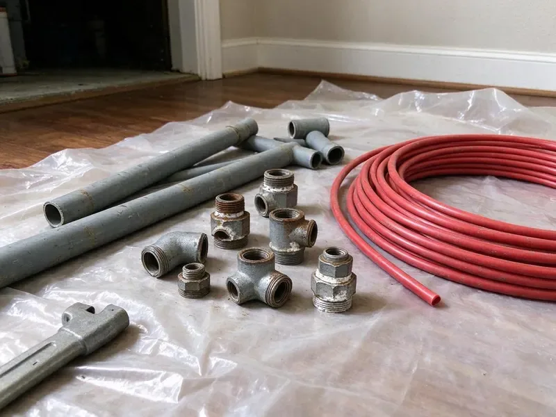

Water Line Replacement in Jonesboro, AR
Dealing with a leaking or burst main water line in Jonesboro, AR can be a real headache. DGR Plumbing offers expert water line replacement services to restore your home's water supply quickly and efficiently.
- Fast Service Available
- PEX and Type K Copper
- Upfront Pricing
- Lasting Solutions

Restore Your Water Supply with Professional Replacement in Jonesboro, AR.
We locate the leak first so you know exactly what needs replacing.
Your Go-To for Water Line Replacement in Jonesboro, AR
At DGR Plumbing, we focus on diagnosing and replacing compromised main water lines in Jonesboro, AR. Our experienced plumbers use advanced techniques and high-quality materials to ensure your new water line is strong and code-compliant.
Our expertise includes:
- Trenchless water line replacement methods
- Galvanized and polybutylene main line replacement with PEX or copper
- Durable Copper and PEX Solutions

Additional Plumbing Replacement Services in Jonesboro, AR
When repairs are no longer enough, our replacement services in Jonesboro, AR deliver durable upgrades that restore full performance.


Customers
Why Choose DGR Plumbing for Water Line Replacement in Jonesboro, AR?
A slow underground leak can waste a lot of water before you notice. Replacing the line protects your foundation, landscaping and water bill.
- Local Expertise, Our team knows the unique challenges of plumbing in Jonesboro, from shifting soils to fluctuating temperatures that can impact buried pipes.
- Confirmed Leaks, We pinpoint leaks with acoustic and pressure testing before digging.
- Advanced Techniques, Our team is skilled in both traditional trenching and less invasive trenchless replacement methods, reducing disruption.
Citywide Coverage
We replace water lines in every part of Jonesboro, from older neighborhoods with galvanized pipe to newer subdivisions with failing poly lines. Our crews handle short runs and long country service lines.
Experienced Team
Our plumbers have replaced water lines through rock, clay and hard-packed soils. They know how to trench efficiently and protect the new pipe with proper bedding.
Safety-First Approach
We take every precaution to protect your property and our crew during water line replacement. From proper utility locates to careful backfilling, DGR Plumbing delivers a safe and compliant process, giving you peace of mind.
Trusted Certified Jonesboro Plumbing Services Professionals
At DGR Plumbing, we take pride in providing certified plumbing services throughout Jonesboro, AR. Backed by recognized industry credentials, our experienced plumbers combine technical skill with genuine customer care. Whether it is repair, installation, or maintenance, we follow strict safety and quality standards to deliver long-lasting results you can trust.
Call Us Now PHCC Plumbing Contractor Recognition
PHCC Plumbing Contractor Recognition Better Business Bureau (BBB) Accreditation
Better Business Bureau (BBB) Accreditation Angi Certified Pro
Angi Certified Pro ISO 9001 Quality Management Certification
ISO 9001 Quality Management CertificationTrusted Water Line Replacement Services in Jonesboro, AR
Commercial Water Service Replacement in Jonesboro
Commercial properties often have larger service lines and backflow assemblies. We replace commercial water lines and coordinate with the utility when needed. We schedule work to limit disruption to tenants and customers. Backflow devices are tested and certified. We take care of permits and inspections.

Traditional Water Line Excavation in Jonesboro
Sometimes, traditional open-trench excavation is the most appropriate method for water line replacement in Jonesboro, especially for severe damage, complex pipe layouts, or when the existing pipe material is incompatible with trenchless techniques. Our team methodically excavates the area, removes the old pipe, and installs a new, high-quality main water line, typically using copper or PEX. We ensure proper grading and compaction of the soil during backfilling to prevent future issues.
Water Line Upgrades and Code Compliance in Jonesboro, AR
Beyond simple replacement, we also offer water line upgrades to increase water flow or ensure compliance with current plumbing codes. Older homes in Jonesboro might have undersized or outdated galvanized steel pipes that choke flow and cause rust-colored water. We can replace these with larger diameter copper or PEX lines, bringing your system up to modern standards and improving overall water pressure and quality.
Emergency Water Line Repair and Replacement in Jonesboro, AR
A major water line break can flood your yard or leave you without water. Call (501) 251-9708 for emergency service. We find the break and make temporary repairs if needed. Then we plan a lasting replacement. Fast response limits damage.
Galvanized Main Line Replacement in Jonesboro
Galvanized steel pipe was common in homes built before the 1970s. Over time, it corrodes inside and chokes the pipe. This causes low pressure and rusty water. We replace galvanized lines with modern PEX or copper. The difference in water pressure is often immediate.
Water Line Materials and Brands in Jonesboro, AR
We work with a range of high-quality materials and well-known brands for water line replacement across Jonesboro, AR. This includes durable copper tubing from manufacturers like Mueller Industries, flexible PEX piping from leading brands such as Uponor and Viega, and high-grade PVC for specific applications where appropriate. Our selection ensures your new water line is made to last, providing reliable water flow and meeting all local standards for potable water delivery.
Emergency Water Line Replacement in Jonesboro
A burst or severely leaking main water line is an emergency, requiring prompt attention to prevent extensive property damage. DGR Plumbing offers emergency water line replacement services to rapidly diagnose and resolve critical failures. Our plumbers are equipped to respond rapidly in Jonesboro, shut off water, and begin the replacement process to restore your home's essential water supply as soon as possible.

Commercial Water Line Replacement in Jonesboro
Beyond residential services, DGR Plumbing also provides robust commercial water line replacement in Jonesboro. Businesses, schools, and industrial facilities rely on strong, steady water service. We handle larger diameter pipes and more complex installations, ensuring minimal downtime for your operations. Our commercial services are matched to meet the specific demands and codes for various business types, utilizing durable materials designed for heavy usage.
Water Line Replacement Near Me in Jonesboro, AR
When you search for "water line replacement near me" in Jonesboro, AR, you want a local company that understands the specific challenges of your area. Our location allows us to respond quickly to your service calls, often providing same-day assessments for urgent water line issues.
If you are searching for water line replacement near me, you want a local team that knows your soil and utility rules. DGR Plumbing serves Jonesboro with leak detection and replacement services. We can usually schedule soon.
DGR Plumbing at a Glance
- Fully licensed plumbing team covering Jonesboro, AR
- Same-day appointments and 24/7 emergency response
- Clear written estimates, no hidden fees
- 4.8-star rated by 871+ Arkansas customers
Jonesboro Map
Jonesboro Information
- Population
- 80,650
- Area codes
- 870/479/501
- Service area
- Jonesboro and communities within 40 miles
- Nearby
- Paragould, Sherwood, Conway, North Little Rock
Rocky soil, shifting ground and aging galvanized pipe make underground service lines vulnerable in Jonesboro, AR, so timely water line replacement protects pressure and property.
Expert Services
Trust our professionals for reliable DGR Plumbing solutions in Jonesboro, AR.
Our Specialized Plumbing Services in Jonesboro, AR
At DGR Plumbing, we provide a complete range of plumbing services across Jonesboro, AR. From leak detection to full system installations, our team ensures fast, precise, and affordable service for both residential and commercial properties. Explore our core services below:


How Our Water Line Replacement Process Works in Jonesboro, AR
From the initial inspection to the final backfill, DGR Plumbing follows a systematic approach to ensure a high-quality and lasting water line replacement.
Request a Quote
Contact DGR Plumbing at (501) 251-9708 to schedule an initial inspection. We will assess your water line issue and provide a detailed, upfront quote for replacement.
Site Assessment
Our technicians will perform a thorough site assessment, locating your water line, identifying the damage, and determining the best replacement method for your property in Jonesboro.
Permitting & Prep
We handle all necessary permitting with Jonesboro authorities. Our team then readies the site, ensuring safety and readiness for the replacement work.
Frequently Asked Questions About Water Line Replacement in Jonesboro
Water line replacement usually costs $2,500 to $6,500 for most homes. Long runs, rock or trenchless methods can increase cost to $7,000 to $12,000.
A newly installed water line using quality materials like copper or PEX can last 50 to 100 years or even longer. Copper is known for its extreme longevity, while PEX typically has a manufacturer's warranty of 25 years but can last much longer. Regular maintenance and stable ground conditions support a longer lifespan.
Low pressure, rusty water, wet spots in the yard and high water bills are common signs. Frequent leaks also show the line is failing.
A newly installed copper water line can last 50 to 70 years or even longer. PEX water lines are also very durable, with an expected lifespan of 40 to 50 years. The longevity depends on factors like water quality, soil conditions in Jonesboro, and the quality of the install.
Some policies cover sudden breaks but not gradual wear. Service line coverage riders can help.
Homeowners are usually responsible for the line from the meter to the house. The utility handles the line on the street side.
Water line replacement is a complex job that requires specialized equipment, knowledge of plumbing codes, and excavation experience. It's highly recommended to hire a licensed professional like DGR Plumbing. Improper installation can lead to leaks, contamination, and costly property damage, and may not pass inspection in Jonesboro.
Homes here are split between crawlspace and slab construction, and crawlspaces allow easier access for repairs and repiping. Shifting ground puts significant stress on underground pipes, often leading to cracks and breaks. In addition, tree roots seeking water can steadily penetrate and damage water lines over time, common issues we address in Jonesboro, AR.
What People Are Saying About Our Plumbing Experts?

Mark T.
When our office needed drain cleaning, DGR Plumbing provided quick, reliable service. The plumber arrived on time and made sure every drain flowed perfectly before leaving. Very satisfied.
Drain Cleaning · North Little Rock, AR
Laura S.
I scheduled a water heater replacement, and the team made the process smooth and affordable. The new unit works perfectly, and they cleaned up after completing the job.
Water Heater Replacement · Sherwood, AR
James P.
Our commercial plumbing system had a leak under the sink, and DGR Plumbing handled it professionally. The plumbers arrived quickly and restored everything without disruption to our customers.
Commercial Plumbing · North Little Rock, AR
Daniel K.
A pipe burst at 11 pm and they actually answered. The plumber showed up within the hour, shut everything down, and had us back to normal the next morning. Could not ask for more.
Emergency Plumbing · Jonesboro, AR
Emily R.
I called DGR Plumbing for plumbing repair, and the technician was fast, polite, and thorough. They explained the problem clearly and fixed it the same day. I will definitely hire them again. Highly recommended!
Plumbing Repair · Sherwood, ARRobert G.
The trenchless sewer replacement saved our front yard. They walked us through the camera inspection footage first so we knew exactly what we were paying for.
Sewer Line Replacement · Paragould, AR